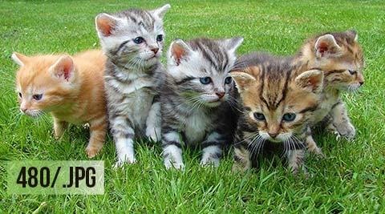

Kittens in the <img> element
The Basics
Below, use the one of your image files to render an image with the src, width, height, and alt attributes.

Using srcset & sizes
Below, practice using the your set of 3 images by using the srcset and sizes attributes in the img element. Use the w (width) value for the srcset. Use the max-width attribute with the px (pixel) value for the sizes.

Kittens in the <picture> element
Below, practice creating a picture element that:
-
uses the standard
<img>as the default use of the smallest image file. -
but
<picture>also uses the<source>element to tell the browser to use the next largest image at a specified minimum width (px) of your choice. -
but the
<picture>uses the<source>element to tell the browser to otherwise use the cropped version of your medium-sized file.